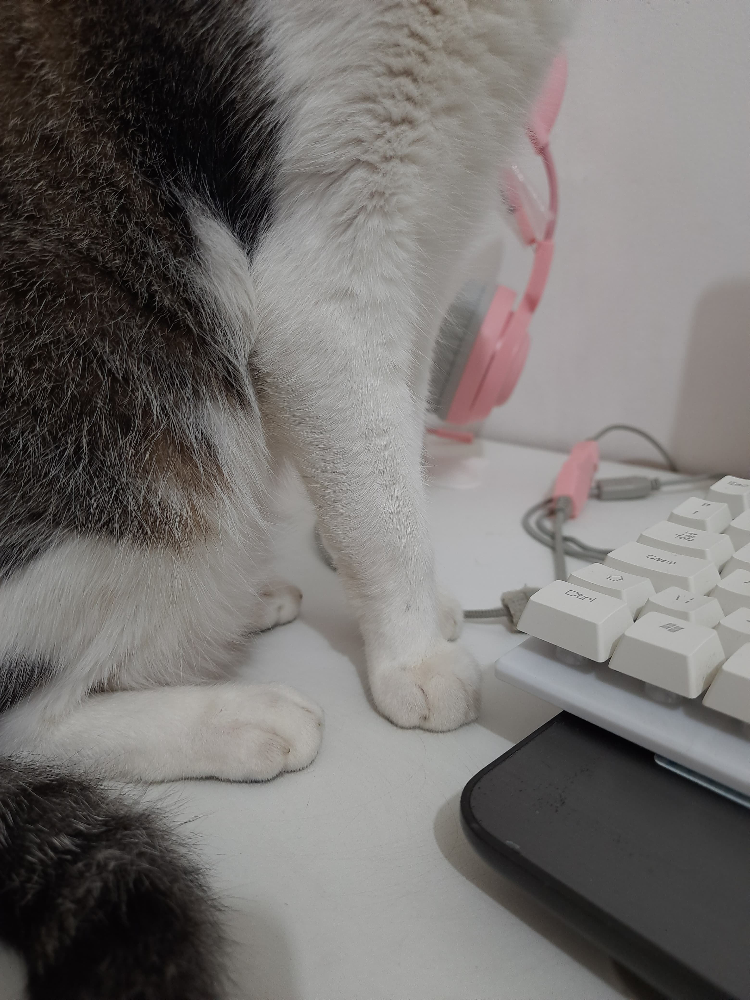

Escolha a escova certa
Parece uma tarefa simples, mas a escovação não é algo trivial para nós, gatinhos! Cada um de nós tem um tipo diferente de pelagem, e isso faz toda a diferença na hora de escolher a escova ideal!
Então, preste muita atenção: nas lojas, como na Petz, você vai encontrar uma variedade incrível de escovas para gatos. Tem para pelos longos, para pelos curtos, e até mesmo para aqueles que têm um pouquinho de cada! As cerdas e o material de cada escova também são importantes, viu? Algumas são ótimas para tirar os nós, outras para remover aqueles pelos mortos indesejados, e tem até aquelas que dão um brilho extra na nossa pelagem divina!
E olha que legal: tem escovas que são verdadeiros canivetes suíços! Elas têm mais de uma função, sendo perfeitas para a nossa rotina de beleza diária. Então, a dica é entender as necessidades do seu gato, observar bem o tipo de pelagem que ele tem, e escolher a escova que mais se adapta a ele. Afinal, nós merecemos o melhor, não é mesmo? Então, humanos, mãos à obra e vamos garantir que nossa pelagem esteja sempre impecável e digna de um verdadeiro rei ou rainha felina!
Escolha o momento certo
Essa é uma atividade que demanda toda a nossa atenção e carinho, afinal, somos seres cuidadosos e precavidos. Um movimento brusco pode nos deixar assustados e fazer a gente sair correndo mais rápido que uma bola de pelos!
Então, humanos,anotem aí:escolham um momento tranquilo, daqueles em que a casa está em paz e não há muitos barulhos ou movimentos bruscos. Comecem fazendo carinho de forma suave, nos acariciando delicadamente. Quando estivermos bem relaxados, aí sim vocês podem começar a usar a escova, mas sempre com muita delicadeza, tá? Observem nossa reação e, se perceberem qualquer desconforto da nossa parte, parem imediatamente!
Ah, e não adianta forçar a barra, humanos! Se a gente não estiver gostando da escovação, vamos fugir mais rápido que um rato assustado! Aí depois vai ser difícil reconquistar nossa confiança e fazer a gente aceitar a escova de novo. Outra dica importante: criem uma rotina para essa atividade, escovando a gente com uma certa frequência. Aos poucos, vamos nos acostumar e até gostar desses momentos de carinho e cuidado!
E não esqueçam:para gatos de pelagem longa, é bom escovar todos os dias. Já para os que têm pelos mais curtinhos, uma escovada a cada três ou quatro dias é suficiente.
Escove no sentido certo
vamos falar sobre um erro comum na hora de escovar gatinhos: não prestar atenção ao sentido dos movimentos, humanos! Esse pode parecer um detalhe bobinho, mas na verdade é super importante durante essa tarefa.
A escovação deve ser feita sempre no sentido do crescimento do pelo, tá? Fazer o contrário pode até parecer eficiente para remover sujeirinhas, mas também pode ser bem desconfortável pra gente. Imaginem só, a escova puxando nossos pelinhos... Isso não é nada agradável e até pode machucar!
Então, humanos, a dica é seguir a orientação natural dos pelos. Assim, a escovação não só fica mais agradável para a gente, como também evita possíveis traumas. Afinal, além de saudável, essa é uma atividade que deve ser gostosa e prazerosa para todos nós, gatinhos!
Cuidado com os nós
vamos falar sobre um assunto peludo: os temidos nós no pelo dos gatinhos! Isso mesmo, humanos, até nós, gatinhos com pelos longos, sofremos com esses emaranhados. Os nós são tão chatinhos quanto parecem, podem acreditar! E a melhor hora de lidar com eles é durante a escovação. Mas olha, é preciso ter cuidado para não machucar a gente, tá? Remover esses nós é um processo delicado e que demanda paciência.
A dica é passar a escova com suavidade, desembaraçando os pelos aos pouquinhos, sem pressa e sem forçar demais. Movimentos bruscos só vão nos machucar e nos deixar com medo da escova na próxima vez. Se o nó estiver muito complicado, é melhor buscar ajuda profissional, combinado?
Agora que vocês sabem como lidar com esses nós indesejados, será mais fácil manter seu filho de quatro patas ainda mais fofo. E lembrem-se, para uma pelagem linda e saudável, nós, gatinhos, também precisamos de muita hidratação e uma ração de qualidade! Vocês exatamente assim agora 👇 anotando e salvando esse site 💜